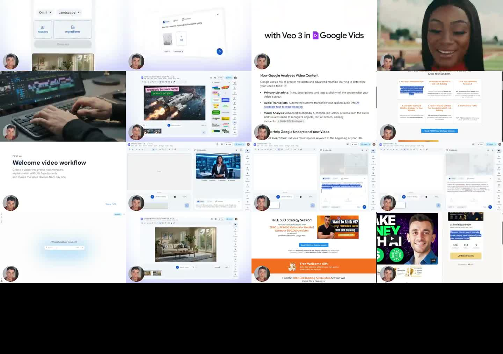

X｜Julian Goldie：Google Vids + Gemini，把一句話變成商務影片草稿

Julian Goldie SEO（@JulianGoldieSEO）在 X 發布一支約 8 分鐘影片，主張「Google Vids + Gemini」能讓商務影片從一句話開始，不用傳統 timeline 剪輯，也不用外包剪輯師。貼文範例 prompt 是：`make this look like a clean startup video.`
貼文主張
貼文的核心說法可拆成四點：
- Gemini 已經進入 Google Vids。
- 一句 prompt 可以改變影片顏色、style 與 transitions。
- 它內建於 Google Workspace，因此適合企業內容與 SEO 速度戰。
- 「Idea on Monday. Published on Monday.」強調從想法到發布的速度。
其中「Google just made $5,000/month video editing free」是典型社群行銷 framing，不能當作實際省下固定成本的保證。
影片畫面保存
已保存 X 影片縮圖與 contact sheet。畫面可見：
- Google Vids 介面與側邊欄操作。
- 「with Veo 3 in Google Vids」字樣。
- 以 Google 文件/簡報式素材生成影片段落的流程。
- 「Welcome video workflow」與商務成長/SEO 類簡報內容。
- 影片中也穿插 Julian 的行銷 CTA 與 Strategy Session 頁面，因此這支影片同時是工具展示與商業導流。
contact sheet 只能代表抽樣畫面，不能逐字確認整支影片每一步操作。
官方來源查核
Google Workspace 官方 Google Vids 產品頁將 Vids 定位為 AI video creation and editing tool，強調由 Google AI / Gemini 支援影片製作。
Google Workspace Learning Center 的「Create your first video in Google Vids」說明，可用 Gemini 的 Help me create 建立影片：輸入 prompt，並可用 `@` 加入 Google Drive 相關文件；送出後 Vids 會產生 suggested outline、suggested scenes、media、script 與 voiceover。
Google Workspace Updates 於 2026-07 發布「Generate higher quality AI video clips and edit any video with Gemini Omni in Vids」，標題確認 Gemini Omni 已進入 Vids，並主打更高品質 AI video clips 與 edit any video。
Google 官方部落格也以「Google Vids expands access to AI tools at no cost」描述部分 Gemini in Vids 功能擴大開放，但「at no cost」與具體可用功能仍會受帳號、地區、Workspace 版本、語言與推出時程限制。
可用於 AI 學習雷達的工作流
- 用 Docs / Slides / PDF 準備素材與產品重點。
- 在 Google Vids 用 prompt 生成初始 storyboard、scenes、script 與 voiceover。
- 依品牌規範調整 tone、色彩、字幕與節奏。
- 匯出前人工檢查事實、授權、畫面與商標使用。
- 把影片再切成短影音、EDM、課程預告或 SEO 內容摘要。
風險與限制
- 不是所有帳號都能立即使用全部 Gemini / Omni / Vids 功能。
- AI voiceover、stock media、背景音樂與上傳素材仍需授權檢查。
- 商務影片仍需要品牌一致性、法務審稿與事實查核。
- 「不用剪輯技能」容易低估 storytelling、節奏、CTA、字幕與平台版型調整。
- 影片越快發布，越需要建立審稿 checklist，避免大量低品質 AI slop。